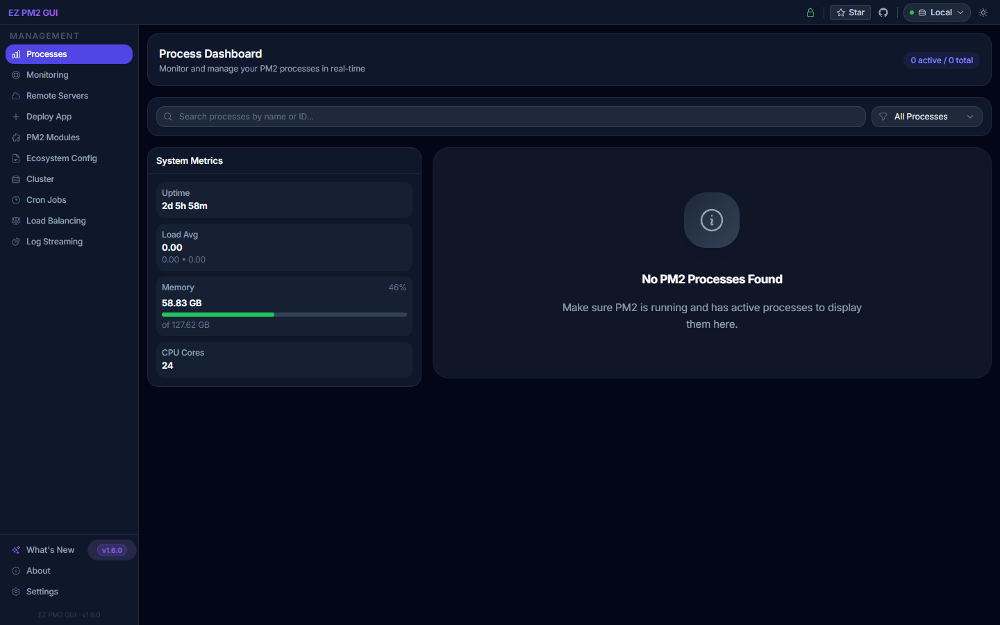
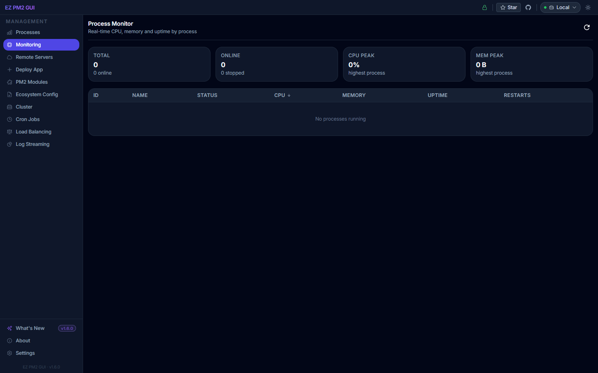
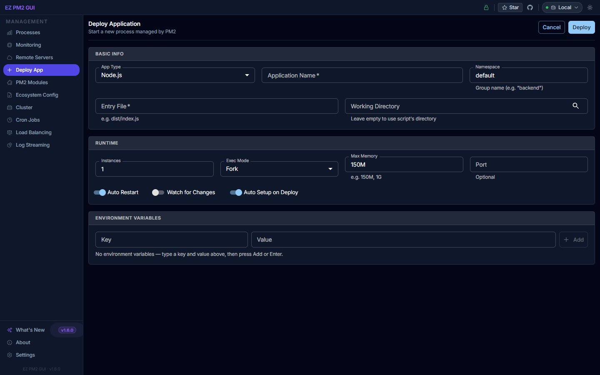
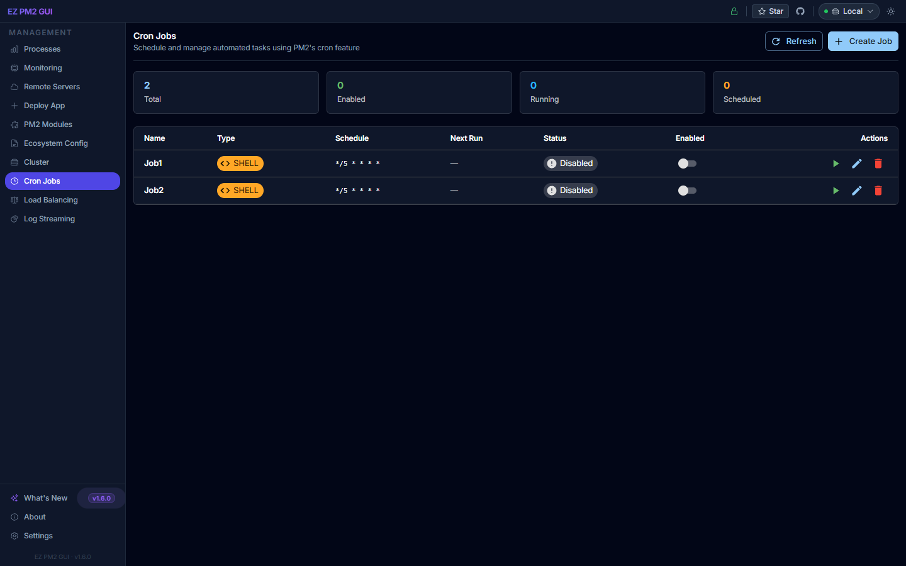
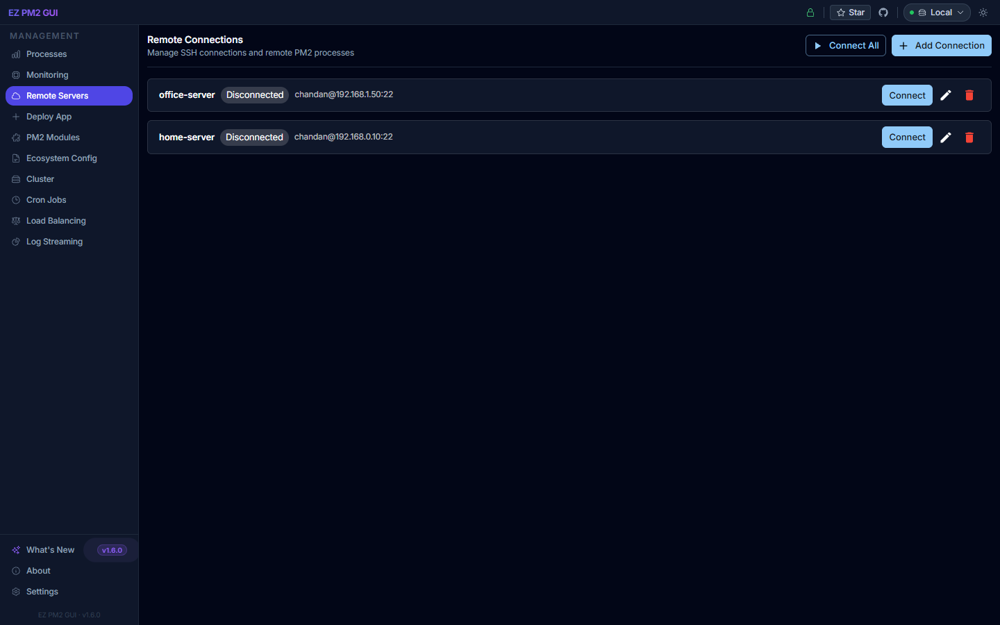
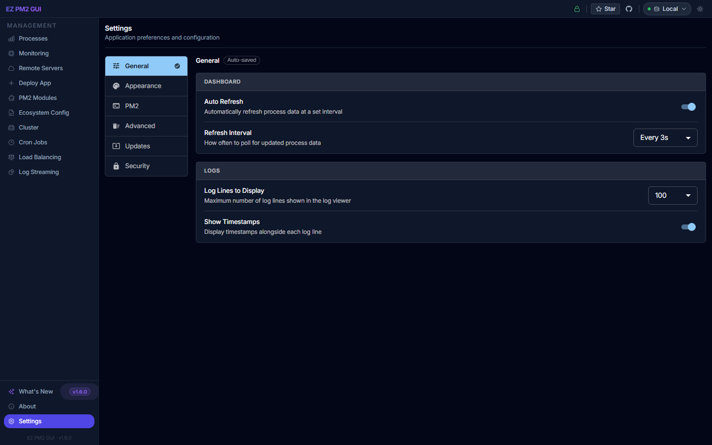

A beautiful, real-time dashboard to monitor, manage, and deploy your Node.js applications. Built on PM2, designed for developers.

From real-time monitoring to one-click deployments — all the tools in one elegant interface.
Track all PM2 processes live — CPU, memory, and status updated every 2 seconds via WebSocket.
Start, stop, restart, and delete processes with one click. Graceful reload supported in cluster mode.
Manage PM2 processes on multiple remote servers via SSH — all from a single dashboard.
Run deployment scripts with live streaming output and a full deployment history log.
Stream, filter, and download stdout/stderr logs. Adjust line counts on the fly.
Scale instances across CPU cores with a slider. Rolling reload with zero downtime.
Schedule recurring tasks with cron expressions. Supports shell, Node.js, Python, and .NET.
SSH passwords encrypted with AES-256-GCM. Private keys referenced by path, never stored.
Check for and install new versions from inside the dashboard. No terminal needed.
Clean, developer-focused screens built to give you information at a glance.
All running PM2 processes with CPU, memory, and uptime at a glance.

Real-time CPU, memory and uptime per process — sortable table with aggregate peaks.

Structured form to start and configure new Node.js applications without a terminal.

Schedule recurring tasks with standard cron expressions — shell, Node.js, Python and .NET.

Manage PM2 on other hosts over SSH — AES-256 encrypted credentials, single-click switching.

Auto-refresh, log buffering, theme, PIN lock, and one-click update checks in one place.
Multiple installation options to fit your workflow.
Navigate to http://localhost:3101 — your PM2 processes load instantly.
npm install -g pm2).
Detailed documentation to help you get the most out of EZ PM2 GUI.
Step-by-step guide to all features — from installation to cluster management and remote servers.
Read GuideREST API documentation for integrating or automating EZ PM2 GUI with your own tooling.
View APIBrowse the source code, report issues, request features, or contribute to the project.
Open GitHubAnswers to common questions about setup, remote server connections, and troubleshooting.
Read FAQJoin thousands of developers who use EZ PM2 GUI to keep their Node.js applications healthy every day.